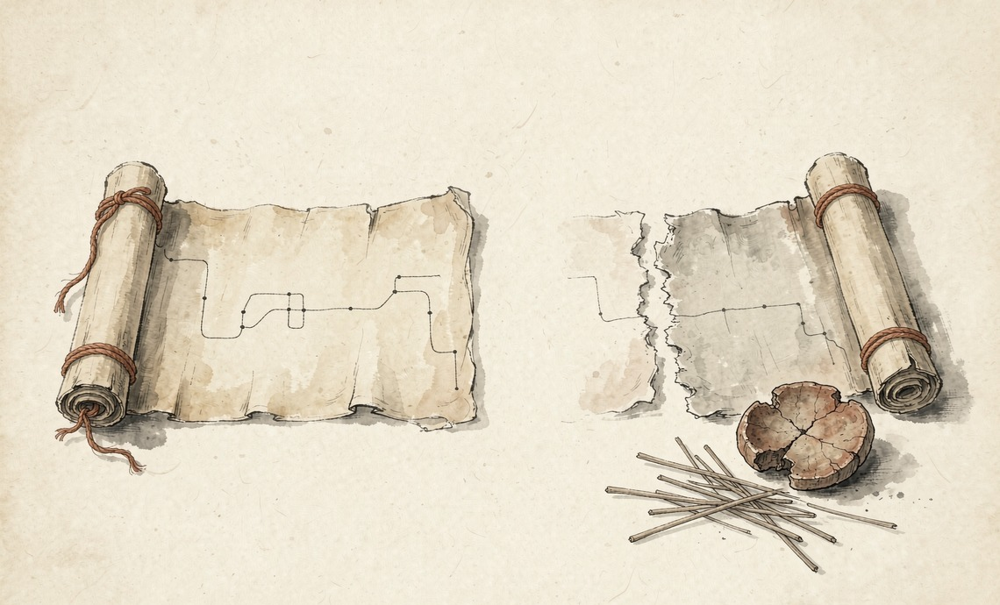
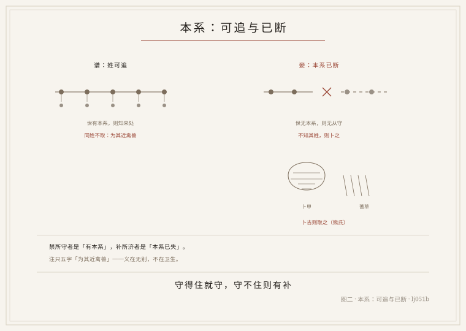

曲礼上 · 一·五十三 · 第 51 课
娶妻不娶同姓；买妾而不知其姓，就卜。姓是本系，本系断了，才用卜来补。
说什么事：取妻不取同姓，故买妾不知其姓，则卜之。
落在哪一层：教。上节讲婚姻的三告，此节讲婚姻的第一条禁。
为何编在此位：一·五十二讲「厚其别」，此节讲「别」的底线：无别则近禽兽。
【经】取妻不取同姓，故買妾不知其姓，則卜之。
不取同姓 郑注：「为其近禽兽也。」
买妾不知其姓，则卜之 郑注：「妾贱，或时非媵，取之于贱者，世无本系。」疏：「诸侯取一国之女，则二国同姓以侄娣媵……或时非此媵类，取于贱者，不知何姓之后，则世无本系，但卜得吉者取之。」
疏引《郊特牲》 「无别无义，禽兽之道。」注云：「此不取同姓，为其近禽兽故也。」
熊氏说 「卜者卜吉凶。既不知其姓，但卜吉，则取之。」
娶妻不娶同姓。所以买妾而不知她的姓，就用卜来决定。
一条禁，一条补。禁是同姓不婚；补是不知姓则卜。禁所守者是「有本系」，补所济者是「本系已失」——礼在守不住的地方，留了一条可走的门。
第一层 「为其近禽兽」 注只有这五个字，说得极重：同姓相婚，等于没有别；没有别，就近于禽兽。疏引《郊特牲》「无别无义，禽兽之道」，把这一条的底说透——不是卫生，是「有没有别」。
第二层 姓即本系 注说「世无本系」。姓是一条可追的线：知道姓，就知道来处。买妾于贱者，这条线断了；断了，礼就无从守。
第三层 卜：不得已的补法 熊氏说「卜吉凶，卜吉则取之」。此卜不是问姓，是问可不可。礼不能替她找回本系，只能就当下求一个可。
第四层 媵与侄娣 疏说诸侯娶一国女，同姓二国以侄娣媵——媵有名有姓，故不须卜。可知「不知其姓」是一条窄路，专为最贱者留。
与今日何干 今日姓已混，同姓不婚早已不行。但此节留下的是另一条：任何「本系不明」的结合，都要有一个额外的确认程序，而不是装作知道。
| 左 | 右 |
|---|---|
| 取妻不取同姓 | 为其近禽兽也 |
| 无别无义，禽兽之道 | 故不取同姓 |
| 妾贱，或时非媵 | 取之于贱者，世无本系 |
| 不知其姓，则卜之 | 卜吉则取之（熊氏） |
| 媵 | 同姓二国以侄娣媵，姓可知 |
| 卜是补法 | 非问姓，是问可 |

